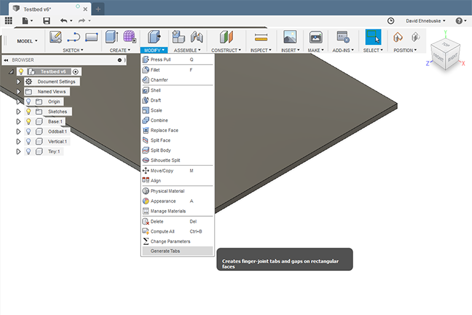
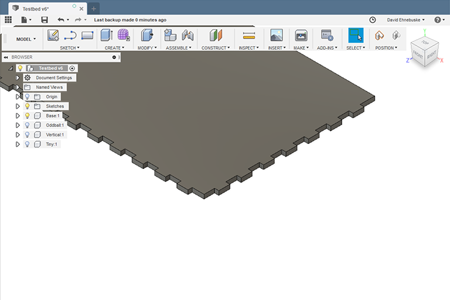

In designs intended to have their parts laser cut from sheet material, it’s common to use “finger-joints” to connect parts to one another. It’s not hard to add the cuts for finger-joints to the edges of parts in Fusion 360, but it is tedious. After doing so a bunch of times, I decided to write this add-in – TabGen – to automate the process. TabGen is free software distributed under GNU General Public License version 3 or later. See readme.html for details and for installation instructions.
This is the first version of TabGen. Though I think I’ve tested it pretty well, I'm sure 1there are bugs in it. Feedback on any problems you encounter would be most welcome. Similarly, there are no doubt improvements that could be made. Let me know what you’d like to see added or changed.
Speaking of changes, the one I’d most like is to have TabGen work smoothly with fully parameterized designs. That is, to have already-cut joints automatically adjust as necessary when user parameters are changed. So far, I haven't quite gotten there. At the end of this write-up I’ve included some technical details of the stumbling block I’ve encountered in the hope an expert in the API might help put me on the right track.
To use TabGen, select it from the Modify menu.
This brings up the TabGen dialog used to specify where the finger joints should be made, how big the tabs and gaps should be, the thickness of the material to be cut, and whether the finger-joints along the selected face(s) should start with a tab or a gap.

Next, select the faces on which the tabs and gaps are to be cut. You can select any number of faces to be cut in a single pass.

With the faces selected and the other parameters adjusted to your needs, click on the “Ok” button. This causes TabGen to cut tabs in all of the selected faces.
TabGen will only cut tabs and gaps on rectangular faces with one dimension equal to the specified material thickness and a length that’s at least long enough to cut one complete finger-joint. If you select a face that can’t be cut, an error message will display in the dialog box explaining what’s wrong, and you won’t be able to click the “Ok” button.
As I mentioned above, I’d like to support parameterized models in TabGen, but I haven’t figured out how to do it.
The fundamental problem I’ve encountered is that in a parameterized model, the dimensions of a face into which finger-joint cuts are to be made depend on some unknown function of some unknown set of user-defined parameters. Since the location, number of cuts and cut depth can all change when the face dimensions change, I need to specify all of that using expression properties in things like ModelParameter objects associated with OffsetConstraint objects. That would be possible if I could refer to other ModelParameter objects in expressions, but that doesn’t seem to work.
For example, the number of gaps to be cut along a face is floor(faceLength / (2 * tabWidth)). I need that number to create a rectangular pattern with the correct number of cuts. But faceLength is some unknown function of some unknown user parameters, so how do I specify it in an expression? I got pretty close but not all the way there.
I can create a driven SketchDimension object on the face that's equal to faceLength. That SketchDimension has a ModelParameter associated with it and that ModelParameter has a value property with the correct contents and its contents are appropriately updated as user parameters are adjusted. But using the name of a ModelParameter in an expression (as you would the name of a UserParameter) generates an error. Sigh.
I’m pretty much out of ideas, and a question I posted on the Fusion 360 API forum has gotten no responses. Any help would be much appreciated.